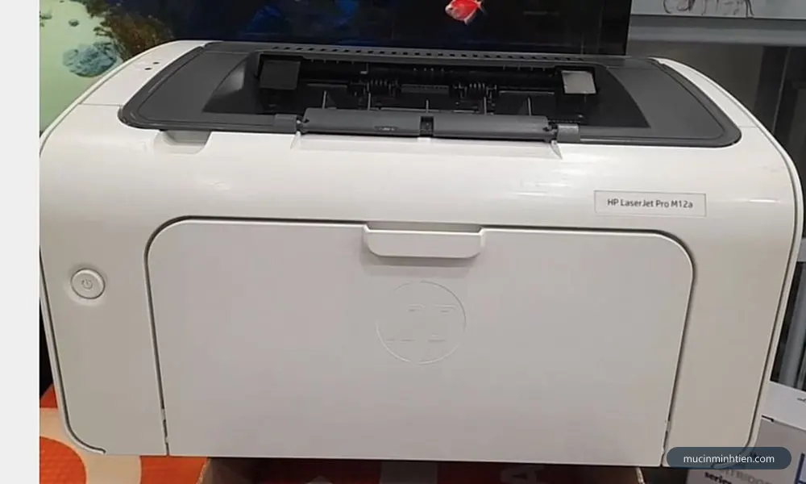
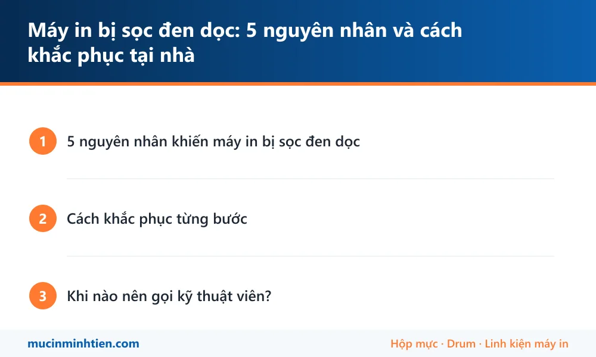

Máy in bị sọc đen dọc: 5 nguyên nhân và cách khắc phục tại nhà
Cập nhật: 27/07/2026 · Kỹ thuật Mực In Minh Tiến
Đang in tài liệu thì trang giấy xuất hiện vệt sọc đen chạy dọc từ trên xuống dưới — lỗi này gặp ở hầu hết máy in laser, từ Canon 2900, HP 1102 đến Brother HL-L2321D. Tin tốt là: nhìn hình dạng vệt sọc có thể đoán khá chính xác nguyên nhân, và một nửa số trường hợp bạn tự xử lý được tại nhà không tốn đồng nào.
Cách khắc phục từng bước

Máy in HP LaserJet Pro M12a — thuộc nhóm máy áp dụng hướng dẫn trong bài.
Khi nào nên gọi kỹ thuật viên?
Nếu đã vệ sinh mà vệt sọc vẫn còn, hoặc bạn xác định drum xước / gạt mòn nhưng không muốn tự thay, kỹ thuật viên Mực In Minh Tiến có thể kiểm tra và thay drum, gạt mực ngay tại nhà ở TP.HCM — thường xử lý xong trong một lần hẹn, có báo giá trước. Tham khảo dịch vụ nạp mực, thay drum tận nơi hoặc bảng giá hộp mực, drum theo model.
Mẹo phòng tránh: dùng giấy in đạt chuẩn (70–80 gsm), không in giấy đã ghim kẹp, và mỗi lần nạp mực nên yêu cầu vệ sinh gạt + kiểm tra drum cùng lúc — máy sẽ rất hiếm khi bị sọc lại.

Tóm tắt nhanh các bước xử lý trong bài. Lưu ảnh này để làm theo khi không tiện mở web.
Câu hỏi thường gặp
Máy in bị sọc đen dọc có phải do hết mực không?
Không hẳn. Hết mực thường làm bản in mờ đều hoặc lem loang chứ ít khi tạo sọc sắc nét. Sọc đen dọc phần lớn do drum xước hoặc gạt mực mòn. Nếu vừa nạp mực xong đã bị sọc, khả năng cao lỗi nằm ở drum hoặc gạt.
Thay drum máy in giá bao nhiêu?
Drum cho các dòng laser phổ thông HP, Canon, Brother có giá thay tham khảo từ 120.000đ tùy model. Nếu chỉ hỏng gạt mực thì chi phí thấp hơn. Xem thêm bảng giá linh kiện hoặc gọi 0915 510 203 để được báo đúng model máy của bạn.
Máy in Canon 2900 bị sọc đen dọc sửa thế nào?
Canon 2900 dùng hộp mực EP-303, cấu tạo như Hình 2 ở trên. Cách xử lý giống hướng dẫn trong bài: kiểm tra vật lạ ở khe gạt, xem bề mặt drum; sọc mảnh sắc nét thì thay drum, sọc rộng mờ thì thay gạt. Đây là dòng máy rất phổ biến nên linh kiện sẵn và rẻ — xem bài riêng cho dòng này: Canon 2900 bị sọc đen dọc.